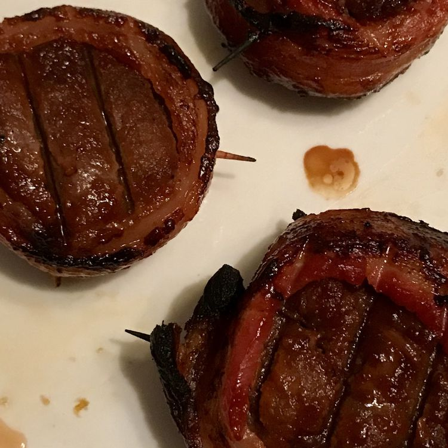

Grilled Venison Backstrap

Tender chunks of venison are marinated twice, and wrapped in thick bacon before being grilled until crispy on the outside. A venison version of Filet Mignon. This is a heavenly use of the best part of a deer. For the BBQ sauce, I prefer hickory flavored.
Ingredients
- 2 pounds venison backstrap, cut into 2-inch chunks
- 1 quart apple cider
- 1 ½ pounds thick sliced bacon
- 2 (12 ounce) bottles barbecue sauce, your choice
Directions
- Place chunks of venison into a shallow baking dish, and pour enough apple cider in to cover them. Cover, and refrigerate for 2 hours. Remove, and pat dry. Discard apple cider, and return venison to the dish. Pour barbeque sauce over the chunks, cover, and refrigerate for 2 to 3 more hours.
- Preheat an outdoor grill for high heat. Charcoal is best, but if you must, use gas. Remove meat from the refrigerator, and let stand for 30 minutes, or until no longer chilled. Wrap each chunk of venison in a slice of bacon, and secure with toothpicks.
- Brush the grill grate with olive oil when hot, and place venison pieces on the grill so they are not touching. The bacon will kick up some flames, so be ready. Grill, turning occasionally, until the bacon becomes slightly burnt, 15 to 20 minutes. The slower, the better. Dig in, and prepare to want more!